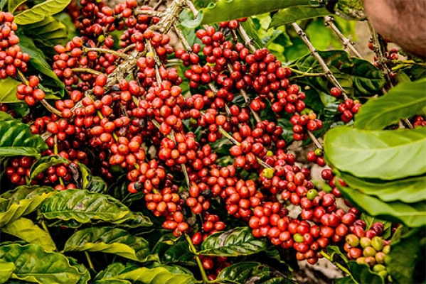
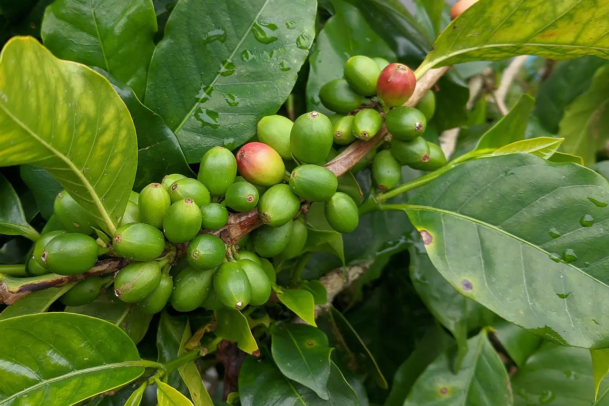

Café Arábica
O café arábica é considerado um dos melhores do mundo, responsável por cerca de 60% da produção global. Possui sabor suave, aroma marcante, acidez equilibrada e menor teor de cafeína. É cultivado principalmente em regiões de altitude elevada, como Brasil, Colômbia e Etiópia.
O café arábica foi catalogado por volta de 1750 e é originário da Etiópia. A espécie corresponde a aproximadamente ¾ dos grãos produzidos em todo o mundo e é tida como a mais nobre da família dos cafés devido à sua complexidade de sabor e aroma.
O cultivo de seus grãos é feito entre 600 e 2 mil metros de altitude. A escolha de altitude impacta diretamente nas características do café, pois quanto mais alto, maior a concentração de minerais nos grãos e mais ameno é o clima para o seu desenvolvimento, o que ajuda na acentuação de sabor, acidez e aroma do café.
O café arábica possui um sabor suave, ligeiramente ácido e naturalmente adocicado. Isso se deve pois seus grãos possuem uma concentração de açúcares muito maior do que a do robusta. Além disso, o café arábica também possui um aroma mais suave e frutado e a concentração de cafeína em seus grãos é bem menor do que a de outras espécies de café.
Blends: Os blends são misturas entre diferentes espécies e variedades de grãos. Devido aos aspectos distintos encontrados no café robusta e no café arábica – e em suas variedades -, é muito comum que os produtores façam blends entre grãos tanto para combinar propriedades quanto para baratear os custos de produção, já que o café arábica tem um custo mais elevado devido aos cuidados que precisa ter no cultivo.
100% Arábica: Um café 100% arábica significa que foi produzido unicamente com variedades de grãos da espécie arábica. Esses cafés recebem a classificação de gourmets ou especiais pela ABIC, (Associação Brasileira de Indústria do Café), que atesta o nível de pureza e qualidade dos cafés.

Café Robusta (Conilon)
Cafeicultura - Café Conilon: O Espírito Santo é o maior produtor de café conilon do Brasil, responsável por aproximadamente 70% da produção nacional. É responsável por até 20% da produção do café robusta do mundo. O café conilon é a principal fonte de renda em 80% das propriedades rurais capixabas localizadas em terras quentes. É responsável por 37% do PIB Agrícola. Atualmente, existem 283 mil hectares plantados de conilon no Estado. São 40 mil propriedades rurais em 63 municípios, com 78 mil famílias produtoras. O café conilon gera 250 mil empregos diretos e indiretos.
O Estado é referência brasileira e mundial no desenvolvimento da cafeicultura do conilon, com uma produtividade média que já alcançou 45,94 sacas por hectare (sc/ha). Muitos produtores tecnificados chegaram a colher mais de 180 sc/ha. A produtividade evoluiu muito nos últimos 26 anos, graças às tecnologias desenvolvidas pelo Instituto Capixaba de Pesquisa, Assistência Técnica e Extensão Rural (Incaper) em parceria com diversas instituições.
Os maiores produtores de café conilon do Espírito Santo são os seguintes municípios: Rio Bananal, Vila Valério, Jaguaré, Vila Valério, Nova Venécia, Sooretama, Linhares, Rio Bananal, São Mateus, Pinheiros, Governador Lindenberg, Boa Esperança, Vila Pavão, São Gabriel da Palha, Colatina e Marilândia.
No Espírito Santo, cerca de 70% das lavouras de café conilon são conduzidas com irrigação. O tamanho médio das lavouras é de 8,0 hectares, conduzidas pelas famílias dos produtores. As plantações vêm sendo renovadas sob nova base tecnológica na ordem de 7% ao ano. Os cafeicultores que utilizam as recomendações técnicas do Incaper têm alcançado produtividade superior a 80 sacas beneficiadas de café por hectare, e produto final de qualidade superior.

Café Libérica
Coffea liberica é uma das quatro principais espécies de café produzidas para o consumo humano. Relativamente desconhecida, essa espécie representa apenas 2% de toda a produção de café do mundo, diferentemente das espécies Robusta e Arábica, que representam, em conjunto, 90% de todo o cultivo de café.
Embora seja nativa da Libéria, na África Ocidental, hoje ela é predominantemente cultivada no Sudeste da Ásia. De fato, a Coffea liberica é a principal espécie do gênero Coffea cultivada na Malásia e nas Filipinas, contabilizando cerca de 70% de todo o café produzido.
De acordo com a especialista Pacita Juan, membra do Comitê Diretor do Departamento de Instalações Florestais e Agrícolas da Organização das Nações Unidas para Agricultura e Alimentação, a planta potencialmente foi da Libéria à Etiópia e depois ao Oriente Médio. De lá, foi consequentemente introduzida à Ásia.
Outros tipos e métodos
Além das espécies, existem diversos métodos de preparo e variações, como espresso, coado, prensa francesa, moka, cold brew, entre outros. Cada método realça características únicas dos grãos e proporciona experiências diferentes para os amantes do café.